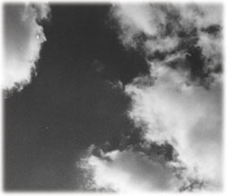

|
クェツアールコアトルの蛇よ。なぜ、私のもとに現れたのか。
青い、青い、どこまでも青い空の果てに、あなたの航跡が銀色の尾を引いている。
あなたは雲を呼びこもうとしている。雨を降らそうとしている。
蛇よ。あなたは伝説の中だけに息吹く神ではなかったのか。
クェツアールコアトルの蛇よ。なぜ、私のもとに。
私は生け贄なのか、それとも雨粒以下の犠牲なのか。
蛇よ。
なぜ、私はあなたとともに空を舞っている。この飛行は稲妻神への祈りなのか。
緑の王国に、積乱雲の城よ。乾いた空よ。私はそれらを愛おしく思う。
だが、クェツアールコアトルの蛇よ。なぜだ。
クェツアールコアトルの蛇よ。私はまだそこに行きたくない。
クェツアールコアトルの蛇よ。私はまだ。
（飛行蛇／テオティワカンへの道）
ゴミ袋の山に頭から真っ逆さまに突っこんでいる、という状況が最初から飲みこめたわけではなかった。狭苦しい闇の中で意識がゆっくりと戻り始めた時、私はなぜそこにいるのか、そもそもそこがどこであるのかさえも見当がつかなかった。徐々にわかったことは、ひどく窮屈な場所で不自然な体勢のまま身動きが取れなくなっているということ。それともうひとつ、手足を踏ん張ろうとする度に身体のいたるところから鋭い痛みがやってくるということだけだった。
一瞬、ここはあの世なのかもしれないと思った。意識が戻る前に何か大切なことを誰かから告げられたような気がしたのだ。残像は浮かび上がってこないものの、無限とも思われる闇を背景に光を放つ何らかの存在と交信をしたような記憶がある。その何かが私に触れ、私をどこかに導こうとしたのだ。だとすればこれは臨死体験そのものではないのか。認識できるはずのない何らかの存在が私の前に現われ、生死の境界を越えさせたのだ。すなわち、私は首を吊ってはっきりと死んだ。向こう側に落ちていったのだ。漆黒の闇に支配されているのは、私が死の物語をすでに歩み始めているということであろう。
しかしその割には、あたりに充満している匂いに現世の生々しさが有り過ぎた。これまでに幾度も嗅いだことがある、すえた、腐った、しつこくまとわりつく乱暴な匂い。職業柄、この匂いだけはわかる。ある意味では懐かしさすら感じさせるその悪臭は、放置された生ゴミ以外の何ものでもなかった。あの世のイメージとはほど遠かった。世界の向こう側を感じさせるどころか、その匂いが連想させるのは新宿歌舞伎町の朝であり、マンハッタンはチャイナタウンのビル裏であった。つまり私が身動き取れなくなっている場所は、闇だけがあの世にふさわしい漆黒を保ちつつも、何だかどう考えてもこの世の猥雑な、ありきたりな質感に満ちているのだった。舌を抜く閻魔様も棍棒を持った餓鬼もそこにはいそうになかった。針の山や灼熱の炎もそこにはなく、むろん天使や天女が現われるわけもなく、私はただごわごわとする厚手のビニール袋のようなものに圧迫され、吐き気をうながす悪臭の中で捨てられたゴム人形のようにうなだれているだけなのであった。
「タカハシさん・・・タカハシさん」
小さな、かん高い声。
記憶が、馬車の車輪のようにゆっくりと回り始める。
「タカハシさん」
水道管の上に現われた黄緑ネズミ。
私は彼をつかんだまま、頭から暗闇に飛びこんだのではなかったか。
砂嵐が襲ってきて。
「タカハシさん、生きてる？ 大丈夫？」
回り始めた記憶の車輪は速度を上げていく。
砂嵐は部屋だけではなく、通路にまで追い掛けてきた。
マルセロが叫んだ。ダスタシュートに逃げろと。
だから私は飛びこんだ。すると、ここは・・・
「タカハシさん、ゴミ袋に無事着陸。でも、逆さま。タカハシさん、逆さま」
ゴミ袋の上をトントントンと歩く音が聞こえ、その足音は同時に私の腰のあたりで触感に変わった。ズボンの尻の部分を引っ張るような小さな力も感じる。マルセロはたった一匹で私を引きずり上げようとしているのだろうか。
「タカハシさん、逆さま」
ダスタシュートの底に私はいた。おびただしい数の生ゴミ袋とともに。
「タカハシさん、頭に血がたまっちゃうよ」
おそらく私は上半身をゴミ袋の中に埋没させ、腰や足をそこから間抜けに突き出しているのだろう。黄緑ネズミはきっと、私の腰のまわりを右往左往しているのだ。
「マルセロ・・・大丈夫か」
私はそう言うのが精一杯だった。頭に血が昇ってやたら苦しいということもあったが、口を開くとベトベトした臭気のかたまりを吸いこんでしまいそうで、それが我慢できなかった。
「マルセロ、大丈夫。でも、タカハシさん、逆さま。逆さま。逆さま。逆さま。逆さま。逆さま・・・」
マルセロが逆さま、と繰り返すリズムに乗って、ダスタシュートを落ちるまでの一連のできごとが時間軸を追うように一コマずつよみがえってきた。
この数時間前、私は首を吊ったのだ。ロープをかけた水道管は折れた。窒息寸前の苦しみの中でマルセロたちが現われ、水晶の火でロープを焼いてくれた。窓には蛾人間が張り付いていて、その顔はかつての恩師にそっくりだった。
「タカハシさん、当たってぶつかってドシンと弾んで、まるでクラッソン駅のNicole'sのコロガリ玉みたいだった。タカハシさん、当たってぶつかってドシンと弾んで」
マルセロは私が落ちていく時の様子を、おそらくはBARのビーンボールか何かにたとえようとしているのだろう。
私は落ちたのだ。七階から。
それはふいに出現した憂鬱の砂嵐のせいだ。砂嵐は何本もの腕を持ち、部屋の中に強引に入りこんできた。そこで佐藤先生の蛾人間は消えてしまった。私は浴びると大変なことになるという砂を頭から大量にかぶった。そしてマルセロをつかんで部屋から逃げ出し、無気味な腕に追い掛けられながらダスタシュートに飛びこんだのだ。
それから私は、あの銀色の羽を持った蛇にしがみつき・・・
「タカハシさん、当たってぶつかってドシンと弾んで、まるでクラッソン駅のNicole'sのコロガリ玉みたいだった。タカハシさん、当たってぶつかってドシンと弾んで」
マルセロがかん高い声で、まるで面白いことでも起きたかのように嬉しそうに繰り返している。私はその不謹慎な声を受け止めながらも、脳裏に突然浮かんだ奇妙な像に一瞬すべてを支配され、腹の底からにじみ出るようなうめき声を漏らした。その生々しい残像をどう判断したらいいのかわからなかったからだ。
闇に浮かぶ銀色の蛇。
あれはいったい何だったのか。あの銀色の巨大な蛇。記憶の順で言えば、ダスタシュートに飛びこんだ後だ。つまり、もっとも新しい記憶として、私は蛇のそばにいた。ダスタシュートの底にいることに気がつくまで、私は蛇の羽にしがみついていた。
蛇だ。
羽の生えた蛇だ。
間違いない。私はいきなり現われた蛇のそばにいた。そして蛇の銀色の翼を見た。
そうだ、蛇だ。何かを告げたのも蛇だ。一瞬でもあの世に逝ってしまったと思った理由、それは蛇が私にもたらした奇妙な体験による。
最初は蛇が現れる気配など少しもなかった。私は真っ暗な闇を落ち続けていくだけだった。しかし落ちていく恐怖と焦りの中で、闇の中に小さな白色の点が灯るのを私は見た。まるでトンネルの向こうから勾配をゆっくりと上がってくる地下鉄のランプのようにそれは意志的だった。私はその光を見た時、それがどこかから放射される強烈な導きなのかもしれないと思った。私自身がそこに引きこまれるような力を感じたからだ。原始以前から生命の根底を照らし続けてきたような、闇までも支配してしまいそうな自ら昇華していく光。だが、それは光彩として留まり続けているわけではなかった。光は突然上下に慌ただしく動くだすと、嵐の中を飛ぶ鳥のように不安定に、かつ確信を持って私に近付いてきたのだ。そして月を飾る虹笠のような輪になり、球状にふくらみ、その中心でとぐろを巻く銀色の蛇を見せつけたのだった。
「マルセロ、私はいったい、どれだけの時間こうしていたのだろう」
「タカハシさん、当たってぶつかってドシンと弾んで。えーと、まずは六階の出っ張りに背中がぶつかり、くるりと回って五階の出っ張りで両手を突っ張り、ずるずる落ちて四階の出っ張りで悲鳴をあげて、それからタカハシさん、当たってぶつかってドシンと弾んで三階でお尻を強打。二階の出っ張りでまたもや両手を突っ張り、ひざをガンガンぶつけてそのまま頭から・・・コロガリ玉のように、でもたったの三秒」
「マルセロ、私はこのゴミ溜めにどれだけいる？ どれだけ気を失っていた？」
「えーと、何が？」
ゴミ袋に潜ったまま身動きがとれない自分が本格的にいまいましくなってきた。話の筋をつかもうとしないマルセロがそのいらつきを増大させる。
「私はだから、どれだけ気を失っていた？」
「タカハシさん、真っ逆さま。だから起こした。頭に血が昇って死んじゃうから、だから起こした」
「マルセロ。私が聞いているのはそういうことじゃない。私が落ちて、君が起こしてくれるまでにどれだけ時間がかかったのか、ということだ。五分か、十分か、それとも一時間か」
ゴミ袋の隙間で大声を出したので、口の中に悪臭の固まりが入ってきた。息が詰まって胸がこみあげてくる。
「マルセロ、タカハシさん、真っ逆さま。だから起こした。頭に血が昇って死んじゃうから、だからすぐに起こした。たぶん、１、２、３、と数える間に起こした。すぐに起こした。すぐに起こした。１、２、３、と数える間に起こした。落ちてすぐに起こした」
「そんなバカな。だったら蛇はいつやってきたんだ。私は暗闇の中で蛇といっしょにいたんだ。たとえ夢だとしても、夢を見ている間は気を失っていたことになる。マルセロ、君も気を失っていたんじゃないのか」
「タカハシさん、蛇を見たの？」
「大きな蛇だ。銀色の」
クッ、と高鳴る呼吸音がして、トントントンとマルセロが走り回り始めた。その振動はゴミ袋を通じて伝わってくる。
「どうした、マルセロ？」
再び、ククッ、と辛そうな息もれがあり、黄緑ネズミは尋常ではない様子だった。
「タカハシさんは蛇を見た。タカハシさんは蛇を見た。蛇だ。蛇がやってくる。タカハシさんは蛇を見た」
マルセロはゴミ袋の山の上を懸命に駆け回っている様子だった。おそらく蛇という言葉が彼を追い詰めてしまったのだろう。ネズミにとって蛇は天敵の一種に違いない。このダスタシュートの底に蛇が潜んでいると思えば、マルセロが取り乱すのも無理はなかった。
「マルセロ、落ち着け。夢なのか現実なのか、私にはわからないんだ」
「タカハシさんは蛇を見た。マルセロは蛇が嫌い。恐い」
よっぽど肝を冷やしてしまったのだろう。ゴミ袋の上を駆け回るだけでは恐怖に打ち勝てなかったらしく、マルセロは壁をよじ登ろうとしているらしい。カリカリカリとコンクリートに爪を立てる音が聞こえ、そこに尻尾でゴミ袋を叩く音が混じった。
「マルセロ、落ち着け。落ち着けって。あれは本当の蛇じゃない。だってあの銀色の蛇には羽が生えていたんだ。鳥の羽みたいな、ふさふさとした羽がだぞ。夢だ。夢に決まっている」
「マルセロは蛇が嫌い。恐い。羽の生えた蛇ならもっと恐い。ここから逃げなきゃ」
マルセロが取り乱す。壁へのジャンプを試みる。
「大丈夫だ、マルセロ。夢に決まっている。こんな狭いところにあれだけ大きな蛇が入ってこれっこない」
事実、その蛇は巨大だった。光の笠に包まれている時にはその大きさがわからなかったのだが、それは遠近感がつかめていないせいだった。蛇は最初、銀製品の置き物か彫刻のようにも見えた。しかし徐々に近付いてくる中で生きた大蛇になり、木の幹のように太くなり、最終的には想像を越えた胴体を私の前に出現せしめた。
銀色の、にびにびと光る胴体だった。直径は１メートルを越えていた。長さの方は見当がつかなかった。ホタテの貝殻ぐらいはありそうなうろこがびっしりと密生していて、そのうろこの一枚一枚に私のやつれ切った顔が映っていた。
それはまったくとんでもない顔だった。不健康に腫れ上がったまぶた。重たいしわの刻まれた目尻。鈍い瞳。すっかり薄くなってしまった前頭部。みじめに伸びているヒゲ。疲労と不運に貫かれた四十二歳の表情。
私はその顔が嫌だった。本当に悲しくなってしまった。蛇に対する恐怖心よりも、私にはその悲哀の方が大きかった。あまりに巨大な存在を前にして、私は目をつぶりたくなるほど、カラシ色のため息が出るほど、前頭部から脂汗混じりの毛が抜け落ちるほど不様な、卑屈な、矮小な、虚弱な日本人だった。私は一枚一枚のうろこに映った自分の顔を手の平で覆い隠そうとした。誰が見ているわけでもないのに、そうしないとそこで座りこんでしまいそうだった。うろこの数は手に負えなかった。一枚を隠せば、どこかでもう一枚私の顔が現われる。しかしそれでも私は次々とうろこを隠し続けた。何かに憑かれたように手の平で隠し続けた。だがどう頑張っても、手の平は二つしかない。いくら隠そうと踏ん張っても、やつれた私の顔は無数に生まれてくるのだった。蛇はそんな私をじっと見ていた。乗用車ほどもある巨大な顔でじっと見続けていた。私はそれを知っていた。蛇に見られていることを知っていた。けれども私には、自分の顔が映ったうろこを隠し続けることしかできなかった。蛇に飲みこまれてしまうという予感はなかった。
それから一瞬記憶は揺らぐ。

気がつけば私は蛇のうろこに顔を埋めていた。神社の大木に抱き着く子供のように、私は蛇に頬を預けていた。きっと、蛇に何かを言われたからだ。それがどんな言葉だったのか、どうしても思い出せない。
蛇の頭のつくりは私たちが普通に知っているそれとはずいぶん違っていた。頭部には勇ましく尖った角が十本ほど生え、二つの瞳は秋の空のように青く澄んでいた。口はとても大きく、無数の牙が上顎から外側に突き出していた。
その牙だらけの口がゆっくりと開き、たしかに何かを言ったのだ。巨大な鍋が煮えたぎっているような、低く重く振動する声。
その声が私に何かを命じた。
いったい何を言われたのか。
しがみついていろ。飛ぶぞ・・・とでも言われたのだろうか。
違う。そうではないような気がする。何かもっと根源的なことを私は言われたのだ。そして私は蛇の胴体から離れ、羽の付け根の部分にしがみついた。そうだったはずだ。
羽には銀色のふさふさとした羽毛がある種の規則性をもって美しく並んでいた。大鷲の羽のように優雅で、船の甲板のように立派だった。王者のような翼だった。
蛇は羽ばたいた。私は浮遊したのだ。
でも、いったいどこへ。
私はどこを飛んでいたのだ。
私の眼下には・・・。
一面の緑だ。緑のジャングルがどこまでも続いていた。頭上は雲ひとつない紺碧の空で甘い香りのする風が吹いていた。真緑のジャングル。白い鳥たちが編隊飛行をしているのが眼下に見えた。
深い緑だった。日輪は大きく西に傾いていた。それでも空は濃紺を誇り、朱色を混ぜ始めた地平線に大きく君臨していた。地平線は３６０度、宇宙の底のようにぐるりと一周して見えた。
私は未だかつてあのような緑を見たことがなかった。あのような空も見たことがなかった。まるで原始地球の、本来の神の意志そのものの、手付かずの大地の風景。
あれはいったいどこだったのか。私は蛇の羽にしがみついて何を見ていたのか。
「タカハシさん、砂嵐ののろいが始まっているんだ」
マルセロの言葉で、壮大な景色は一瞬にして消え失せた。私は宇宙と大地の間から再び暗闇に連れ戻されていた。マルセロは走り回ることをやめて、どこかに身を潜ませているらしい。ゴミ袋の隙間から声が聞こえてくる。
「砂嵐ののろいって？」
「砂嵐のひと粒ひと粒は憂鬱の種。タカハシさん、数え切れないほど砂を浴びた。だからこれから数え切れないほどの憂鬱と出会う」
「よしてくれ。そうじゃなくても首を吊ったところを君たちに助けてもらったばかりなんだ。これ以上、いったいどういう憂鬱に出会うというんだ。だいたい、砂嵐ってのは、あれはいったい何なんだ。まだ七階で暴れているのか」
「マルセロ、わからない。マルセロ、わからない。でも、もう砂の音はやんだ」
言われてみれば確かにそうだった。ダスタシュートの底で意識が戻ってから、あのザッザッザッザッザッザッという陰気な音は二度と聞こえてこなかった。闇を越えて伝わってくるのは、デカブ・アベニューを時おり往来する車やトラックの振動、あるいはずっと遠くの方で鳴っているパトカーのサイレンの音だけだった。
「マルセロ、君、本当に砂嵐の正体がわからないのか」
「マルセロ、わからない。マルセロ、わからない。でも、もう砂の音はやんだ」
「他のネズミたちは砂嵐がやってくる前に逃げ出したじゃないか。何かの予感があったから彼らは走り出したんだろう。君たちは砂嵐のことについていろいろと知っているはずだ」
「マルセロ、わからない。マルセロ、わからない。でも、もうきっと消えたよ。もうきっと消えた。そしてのろいが始まった」
まったく縁起でもないことを言うネズミだと思いながらも、マルセロの言葉にはどこか説得力があった。少なくとも私は彼らがいなかったらあのまま死んでいたのだ。そこを助けてもらった以上、この奇妙なネズミを侮ることはできなかった。逆に言えばマルセロは信用に足りた。理解に苦しむできごとがこれだけ連続して起きているのだ。マルセロの言葉に耳を澄ますのが唯一の方策というものだろう。だが、彼の言うのろいの意味がわからない。未遂を越え、ほぼ自殺を完遂しきった私のような人間が、これからまたその悲惨を越える新たな憂鬱に取り囲まれるなどということがあり得るのだろうか。しかも何万何千という砂の数だけ。
もし本当にそんなことが起こったら、と思うだけですべての血管がじりじりと縮む思いだ。頭に血が昇る以上に苦しいものがやってくる。話が半分だとしても、いや、数百分の一だとしても、のろいの話が本当であれば私の前途はとてつもなく暗い。ダスタシュートの中で一生逆さまでいろと言われるようなものだ。いくら何でもそれは耐えられない。
どこか遠くへ逃げることができれば、そののろいの力から遠ざかることができるのだろうか。ならば現実の地獄が待っていようが、ニューヨークを離れて日本に戻るべきなのかもしれない。娘に会って、しっかりと生きていく決意表明をするべきであろう。
しかし、それがもし新たなる憂鬱の始まりだとしたら。それこそ砂嵐がまき散らした砂の分だけの憂鬱が私と娘の間に降りかかるのだとしたら。
「マルセロ、のろいは遠くに逃げても追い掛けてくるのかな」
「マルセロ、わからない。マルセロ、憂鬱の砂嵐恐い。マルセロ、羽の生えた蛇恐い。タカハシさん、冷たい人だ。タカハシさん、冷たい人だ。大切なことを忘れている」
「うん、何が？」
ククッ、とネズミが息を飲む。ツツツツツッ、と彼は震えている。それがゴミ袋を伝わってくる。
「マルセロ、どうしたんだ」
「マルセロはタカハシさんを助けようと思った。だからタカハシさんの部屋に最後まで残った。そしてマルセロも」
「うん？」
「憂鬱の砂を山ほど浴びた」
臭気で麻痺してしまった鼻なのに、その奥をツンと刺されたような気持ちになった。言われてみればたしかにそうだ。ほぼすべてのネズミが逃げ去ろうとしている時、マルセロだけは毅然と部屋に残っていた。彼は部屋に溜っていく砂の上をぴょんぴょん跳ねながら、私と同じく砂爆弾にやられていた。
「ということは、マルセロ。君ものろいを受けるわけか」
「マルセロ、わからない。でもたぶん、そう。マルセロ、泣きたい」
ここから何としてでも脱出しなければ、という焦りが強くなってきた。相手はネズミだが、私を命がけで助けてくれたネズミである。ただのネズミじゃない。今度は私がマルセロを守ってやらなければ。
どのみち一度首をくくっているのだ。親はすでにいない。家族とも一応はサヨナラしたことになっている。金銭的にはほぼ破産している。疲れきってはいるものの身体ひとつのこの命だ。何を恐れることがあろう。失うものは何もないのだ。これから砂の数だけの何万何千という憂鬱がやってこようと、憂鬱を憂鬱として認めないほど図太くなってしまえば生きていくことは可能ではないのか。子供の頃を思い出せば、私はもともと自分の痛みや切なさなら我慢できた人間だった。首をくくったのは何かの気の迷いだったのだ。これから先は自分にどんなことが起きようと、故郷のイガイガ根に生えていた刺タンポポのように力強く生きていけばいい。まず、このネズミを守り、それからまたどこかの調理場で働かせてもらい、イサキのサンガ焼きを食べて微笑んでくれた中年男性のような、私の味で疲れを癒してくれるお客の一人一人を大事にして残りの人生を作り上げていくのだ。
さあ、ここから出よう。
勇気を出してもう一度歩き出そう。
「マルセロ。私は今、御覧の通り逆さまなんだよ。それで、このままではいけないと思うんだ。あの、ここからどうやって出るべきかね」
「マルセロ知ってる。タカハシさん、逆さま。マルセロ、蛇恐い。羽の生えた蛇ならもっと恐い。もうすぐ、ゴミ、なくなる」
「ゴミ収集のメキシコ人が来るのかい？ それにしちゃあ、早いな。今、何時ぐらいなんだろう」
「マルセロ知ってる。タカハシさん、逆さま。メキシコ人こない」
「どういうことだ？ 誰がこのゴミの山を掃除するの」
「マルセロ知ってる。蛇恐い。羽の生えた蛇ならもっと恐い。壁から現れる。見ない方がいい。でも、もう砂嵐を浴びたのだから見えてしまう」
「なんだって？」
「マルセロ知ってる。すべては始まった。のろいも始まった。目をつぶってて」
「マルセロ、何を知っているんだ？」
そう聞き返した途端、頭の周りをびっしりと囲んでいたゴミ袋がかすかに震え始めた。マルセロ一匹が起こしているような振動ではなく、揺れ幅は小さいけれども捨てられたゴミ袋すべてが踊り出したような全体的な動きだった。ダスタシュートの底そのものが揺れ始めたのだろうか。
「おい、誰かいるのか！」
返事はない。これからいったい何が起きるのだろう。あの巨大な蛇が再び現れるのだろうか。それともこれは機械的な動きで、ひょっとするとダスタシュートの底の方にゴミ袋を吸い取る穴のようなものが設置されているのだろうか。そこに向かってゴミが少しずつ動き出しているのだとすれば、これは相当に危険な話だ。穴の向こう側にはゴミの裁断機か何か、極めて非人間的なものが待ち受けている可能性もある。このままでは私やマルセロもそこに運ばれてしまう。
「マルセロ、何が起きているんだ？」
「目をつぶってて」
「おい、誰か！ 人がいるんだ！ 機械を止めろ！」
目をつぶっているわけにはいかなかった。私は動き始めたゴミ袋の隙間で懸命に叫んでいた。このまま無抵抗に飲みこまれてしまえば、ゴミの行く末と同じ運命になってしまう。おそらくはどこかに運ばれ、裁断され、そのまま燃やされてしまうのだ。首を吊ったばかりで、まだその痛みを覚えている。避けなければいけないのは死だ。ここで粉々にされるわけにはいかない。
「おい、助けてくれ！ 人がいるんだ！」
ゴミ袋の揺れはさらに大きくなった。それぞれの袋が命でも宿ったかのようにぐりぐりぐらぐらと動く。だがその動きのお陰でこれまで密接していたところに隙間ができ、逆さになった私の上半身の周りに身動きをとれるだけの空間ができつつあった。何かの拍子に身体を抜くことができるかもしれない。
「誰か！ 機械をとめろ！」
叫び続けてもゴミ袋の動きは止まらない。まるでダスタシュートの底が巨大な洗濯機になって回り始めたかのようだ。
突然、左手が自由に動くようになった。ひじに激しい痛みが走ったが、脱出を考えれば悲鳴をあげている時間はなかった。痛みはきっと、七階から落ちてくる時に壁か出っ張りで強打してしまったせいだろう。つまり物理的な痛さだ。それなら耐えられる。私は他人の悲しみには弱くても、自分の痛みには強いのだ。それを忘れていた。今夜はその性格を思い出せる。私は痛みに強い。骨が折れていようが砕けていようが、ここから抜け出してみせる。負けない。
「くそっ、機械を止めろ！」
「マルセロ知ってる。これ、機械じゃない」
マルセロのかん高い声が聞こえた瞬間、ぐらりと身体が傾いた。その途端に右手も自由になった。両手が使える。私は周囲のゴミ袋を逆立ちする要領で押し返し、その勢いで何度か腰を振ってみた。
何ということはなかった。これまでどうして逆さまに突き刺さっていたのだろうと思うぐらい上半身がいとも簡単に抜けた。そのまま半回転して、私はあっけなく動くゴミ袋の上に座りこんでいた。体勢を立て直したのだ。頭に溜まった血が先を争うように引いていくのがわかった。淀んだ空気はゴミ袋の動きとともに撹拌されているようだったが、鼻が既に麻痺しているため、臭気は感じられない。
「マルセロ、何とか身体を抜いたぞ。マルセロ、どこにいる？」
トントントントン、と袋の上を走りこんでくる足音があって、手の平に黄緑ネズミが飛び乗ってきた。落ちた時のショックで脱げ落ちてしまったのだろうか。四本の脚にはブラックビーンズの靴がなかった。しかし背中には例の赤いリュックサックを背負っていた。
「マルセロ、ここから出よう」
何年も会っていない親友と偶然また会うことができたような感慨があり、私はマルセロの小さな頭を撫でた。マルセロはクククッ、と鳴いて頭を指にこすりつけてきた。
「マルセロ、どうした？」
よく見ればマルセロの身体は落ち着きなく小刻みに震えていた。そしてその様子を知った瞬間、私は彼が見えていることの奇妙さに気がついたのだった。
マルセロは震えている。靴をなくしたマルセロは素足だ。マルセロは赤いリュックサックを背負っている。私はマルセロを撫でている。その指先が見える。
漆黒の闇の中でだ。
つまりそれはどこかから光が漏れていることに他ならない。
「タカハシさん。マルセロ、知ってる。マルセロ、見たくない」
マルセロは小さな目をつぶった。
ゴミ袋は相変わらずぐらぐらと揺れている。
突然、ニョリッ、と生肉が裂けるような音がして、目の前の壁からクラゲのようなものが現れ始めた。青泥色に光っている。ぬめぬめとした表面から卵の白身のような液体を滴らせ、こちらに向かって迫り出してくる。
クラゲか？ まさか。たしかに伊豆の夏の海であれば、夜光虫が湧いた時には浮遊するクラゲがこんなふうに光って見えた。まるで波間に漂う蛍光灯のように暗い海面を照らしていた。
だが、これは何なのか。ここはもちろん夜の伊豆の海ではない。ブルックリンの無認可アパートのダスタシュートの底である。
ニョリッ、ニョロリッ、と物体は壁から盛り上がって迫り出し続ける。青泥い光がそこからさらに強く発射される。
「マルセロ、これ、まさか・・・」
私はそのクラゲの正体に気付き、息を飲んだまま身体を硬直させてしまった。
クラゲのように見えたもの。それは男の頭だった。前頭部から頭頂部までがすっかり薄くなり、耳の周囲だけに黒々と毛を生やした中年男の頭だった。顔は欧米人ではない。東洋人だ。蛇のうろこに映っていた私の顔と同じく、腫れぼったいまぶたをしている。鼻は低く上を向いていて、眉毛も薄く、瞳は地下道の側溝のように濁っている。頭だけを異様におどろ青泥く光らせ、頭部や顔面からはずるずるとした粘液を滴らせ、生ゴミにも負けないほどの腐臭を放っている。麻痺したはずの私の鼻が再び猛烈な匂いを感じるほどだ。
ニョロリ、ニョロリッ、と顔は壁からいよいよ突き出され、こちらに近付いてくる。ぼってりとした唇、二重顎、たるんだ首、その割には筋肉のそげ落ちた貧相な胸までをそうやって現わし、ついには両腕までを突き出してきた。男は私と目を合わせようとはしない。ゴミ袋の山をハゲ青泥光で照らし出し、ドロンと汚れた目でそれを見回している。
ある予感があって、私はそっと後ろを振り向いてみた。
後ろの壁にも同じく、迫り出した男たちの薄ら頭があった。夜光虫に似た青泥い光でゴミ袋を照らし、ちょうど両腕でそれらをつかみ出したところだった。頭上にも幾つもの頭が見える。上半身を壁から完全に垂れ下がらせ、今にも目の前に落ちてきそうな光沢頭もあった。真っ暗闇のはずなのにマルセロや私の指先が見えたのは、壁から生えた幾つかのハゲ頭があの段階ですでにおどろ青泥光を放射していたからであろう。私はそれに気付かなかった。
「げぽっ」
男がゲップをした。私はまた前方を向く。男の耳の周りの毛は江戸時代のさらし首のそれのようにだらしなく垂れ下がり、そこから滴り落ちる粘液はゴミ袋の上まで糸を引きながらぽたぽたと音を立てていた。
マルセロは私の手に守られて、身動きせず硬くなっている。
男はふいにゴミ袋に手をかけた。粘液のついた手で袋をじゅりじゅりと掴み、そのまま左右に引っ張って穴を開けてしまった。そして穴の中に手を突っこみ、野菜くずのようなものを掴んで、それを口に運び始めた。
「げぽっ」
もう一度男がゲップをした。口に一度入った野菜くずがそこからこぼれ落ちた。同時に口の中から一匹の黒々としたゴキブリが現れ、どこかへ向かってカサカサと走り過ぎていった。男はもう一度ゴミ袋の中に手を入れ、残飯の汁をたっぷりと吸いこんだ雑巾のようなものを引っ張り上げた。それをそのまま口に運ぶ。濁った瞳がひっくり返った。両目とも白目になって、口よりもはるかに大きい雑巾を飲みこもうとしていた。
「・・・あのう、ちょっと、話してもいいですか？」
これだけ異様なものに出会いながら、しかし私はどこかが冷静だった。声そのものはひくついて裏返ってしまっていても、言わなければいけないことは言わなければいけない。私は調理師だったのだから。
「そういうもの食べると、身体に悪いと思うんですけど」
白目のまま、ぬちゃぬちゃと男は雑巾を咀嚼している。口のまわりから雑巾にしみこんでいた汁がほとばしり、それが粘液といっしょになってゴミ袋の上に落ちていく。
「それ、ゴミですよ」
男は相変わらずぬちゃぬちゃと雑巾を食い続けている。そして再びゴミ袋の中に手を突っこみ、卵の殻やバナナの皮をわしづかみにした。それをそのまま、まだ雑巾の端が見えている口に放りこんだ。どす黒く歪んだ唇からは粘液がだらだらとあふれ、黄色を通り越えて褐色に変色した歯が生ゴミを噛みしめている。
「マルセロ・・・この人たち、いったい何なんだ」
マルセロは答えない。私の手の上で震えたままだ。
私は背後を振り向いた。同じく正視に耐えない腐敗した男たちが生ゴミを咀嚼している。中には腕で生ゴミ袋を抱きかかえ、それをそのまま強引に口に運ぼうとしている者もいる。いくら何でもそれは無理だろうと思うのだが、その化け物じみた顔面は苦しそうな表情で生ゴミ袋一気食いに挑戦していた。そして隣のおどろ青泥光はそれを見ながら手拍子を打ち、♪イッキ、イッキ、イッキ、イッキ♪、と濁った瞳で無表情のままはやし立てているのだった。
彼らに共通している点は頭部が私と同じく薄らハゲ状態、あるいは完ハゲ状態で耳の周囲にだけ毛髪を残しているということ。顔面そのものは腐りかけているということ。イッキ食いを知っているということから、ひょっとしたら日本人なのかもしれない、ということだった。私はマンハッタンであらゆる民族の食事風景を見てきた。イッキ飲みやイッキ食いを好んでやるのは日本人と韓国人だけだ。だが、韓国人はイッキとは言わない。
目の前の男が生ゴミ袋からラップに包まれたホットドッグを引っ張り出した。冷蔵庫の隅で何日も忘れられていたようなホットドッグだった。男はラップをはがさずに、ホットドッグを口に突っこんだ。ぬちゃぬちゃとした音とともに口の中に絶対に消化されないラップが飲みこまれていく。
「あの、やっぱり、そういうもの食べちゃいけませんよ」
私はもう一度男に話し掛ける。男は白目から急に黒目に戻り、私の顔を初めてじっと捉えた。
「食べない方がいいと思うんです」
「だって、ノルマだもの」
粘液といっしょに今にも崩れ落ちそうな唇。そこから出たのは日本語だった。（第４回了）
|